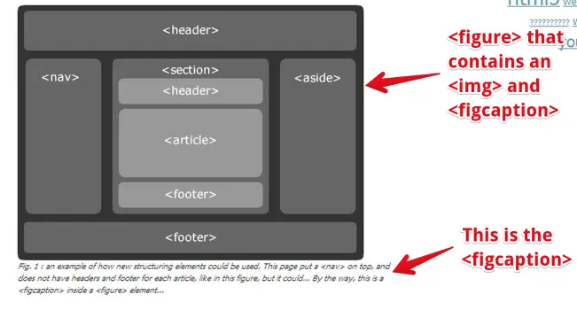

1.1 History of HTML: From HTML1.0 to HTML5.0
1.2 HTML5 Structural elements
1.3 A Blog example: Mixing All Elements Together
1.4 The Details and Summary elements
1.5 Microdata
2.1 HTML5 Multimedia: Streaming with Video and Audio Elements
2.2 Subtitles and closed captions
2.3 Enhanced HTML5 media players and frameworks
2.4 Webcam, microphone: the getUserMedia API
3.1 Introduction - Module 3: HTML5 Graphics
3.2 Basics of HTML5 canvas
3.3 Immediate drawing mode: rectangles, text, images
3.4 Path drawing mode: lines, circles, arcs, curves and other path drawing methods
3.5 Colors, gradients, patterns, shadows, etc.
4.1 Introduction - Module 4: Animations
4.2 Basic animation techniques
4.3 Canvas and user interaction (keyboard, mouse)
4.4 A glimpse of advanced canvas functionalities
5.1 Introduction - Module 5: Forms
5.2 Elements and Attributes
5.3 Accessible Forms
5.4 <input> Types
5.5 Forms Attributes
5.6 Forms Elements
5.7 Form Validation API
6.1 Introduction - Module 6: HTML5 Basic APIs
6.2 The Web Storage API
6.3 The File API
6.4 The Geolocation API
W3C has designed a “Front-End Web Developer” (FEWD) Professional Certificate
where you learn all of the necessary skills needed to build interactive and responsive user experiences
on the Web. This program deepens your knowledge of the 3 foundational languages that power the Web:
HTML5, CSS and JavaScript.
The W3C FEWD program is composed of 5 courses:
This course is a natural follow up to the CSS Basics and HTML5 & CSS Fundamentals courses.
The HTML5 course team is thrilled to guide you in your learning experience. We are committed to teach you how to code Web pages, and how to do it the correct way. We encourage you to create Web pages and apps and share them in the discussion forums. Have fun!
While any text editor, like NotePad or TextEdit, can be used to create Web pages, they don’t necessarily offer a lot of help towards that end. Other options offer more facilities for error checking, syntax coloring and saving some typing by filling things out for you.
To help you practice during the whole duration of the course, we use the following interactive online editors. Pretty much all the course’s examples actually use these tools.
JS Bin is an open source collaborative Web development debugging tool. Most of the examples that are in this course are on JSBin.
Tutorials can be found on the Web such as this one or on YouTube.
The tool is really simple, just open the link to the provided examples, look at the code, look at the result, etc.
And you can modify the examples as you like, you can also modify / clone / save / share them.
Keep in mind that it's always better to be logged in (it's free) if you do not want to lose your contributions/personal work.
style="width:CodePen is an HTML, CSS, and JavaScript code editor that previews/showcases your code bits in your browser. It helps with cross-device testing, real-time remote pair programming and teaching.
Here's an article of interest if you use CodePen: Things you can do with CodePen [Brent Miller, February 6, 2019].
There are many other handy tools such as JSFiddle, and Dabblet. Please share your favorite tool on the discussion forum, and explain why! Share also your own code contributions, such as a nice canvas animation, a great looking HTML5 form, etc.
The term browser compatibility refers to the ability of a given Web site to appear fully functional on the browsers available in the market.
The most powerful aspect of the Web is what makes it so challenging to build for: its universality. When you create a Web site, you’re writing code that needs to be understood by many different browsers on different devices and operating systems!
To make the Web evolve in a sane and sustainable way for both users and developers, browser vendors work together to standardize newfeatures, whether it’s a new HTML element, CSS property, or JavaScript API. But different vendors have different priorities, resources, and release cycles — so it’s very unlikely that a new feature will land on all the major browsers at once. As a Web developer, this is something you must consider if you’re relying on a feature to build your site.
We are then providing references to the browser support of HTML5 features presented in this course using 2 resources: Can I Use and Mozilla Developer Network (MDN) Web Docs.
Can I Use provides up-to-date tables for support of front-end Web technologies on desktop and mobile Web browsers. Below is a snapshot of what information is given by CanIUse when searching for “CSS3 colors”.
Example of a CanIUse browser support table (using CSS3 colors);


To help developers make these decisions consciously rather than accidentally, MDN Web Docs provides browser compatibility tables in its documentation pages, so that when looking up a feature you’re considering for your project, you know exactly which browsers will support it.
For over 15 years, the W3C has been developing and hosting
free and open source tools used every day by millions of Web developers and Web
designers.
All the tools listed below are Web-based, and are available as downloadable
sources or as free services on the
W3C Developers tools site.
The W3C validator checks the markup validity of various Web document formats, such as HTML. Note that you are automatically directed to the Nu Html Checker when validating an HTML5 document.
The CSS validator checks Cascading Style Sheets (CSS) and (X)HTML documents that use CSS stylesheets.
Unicornis W3C’s unified validator, which helps people improve the quality of their Web pages by performing a variety of checks. Unicorn gathers the results of the popular HTML and CSS validators, as well as other useful services, such as Internationalization, RSS/Atom feeds and http headers.
The W3C Internationalization Checker provides information about various internationalization- related aspects of your page, including the HTTP headers that affect it. It will also report a number of issues and offer advice about how to resolve them.
The W3C Link Checker looks for issues in links, anchors and referenced objects in a Web page, CSS style sheet, or recursively on a whole Web site.
For best results, it is recommended to first ensure that the documents checked use valid (X)HTML Markup and CSS.
The W3C cheatsheet provides quick access to useful information from a variety of specifications published by W3C. It aims at giving in a very compact and mobile-friendly format a compilation of useful knowledge extracted from W3C specifications, completed by summaries of guidelines developed at W3C, in particular Web accessibility guidelines, the Mobile Web Best Practices, and a number of internationalization tips.
Its main feature is a lookup search box, where one can start typing a keyword and get a list of matching properties/elements/attributes/functions in the above-mentioned specifications, and further details on those when selecting the one of interest.
Most of the technologies you use when developing Web applications and Web sites are designed and standardized in W3C in a completely open and transparent process.
In fact, all W3C specifications are developed in public GitHub repositories, so if you are familiar with GitHub, you already know how to contribute to W3C specifications! This is all about raising issues (with feedback and suggestions) and/or bringing pull requests to fix identified issues.
Contributing to this standardization process might be a bit scary or hard to approach at first, but understanding at a deeper level how these technologies are built is a great way to build your expertise.
If you’re looking to an easy way to dive into this standardization processes, check out which issues in the W3C GitHub repositories have been marked as “good first issue” and see if you find anything where you think you would be ready to help.

Another approach is to go and bring feedback ideas for future technologies: the W3C Web Platform Community Incubator Group was built as an easy place to get started to provide feedback on new proposals or bring brand-new proposals for consideration.
Happy Web building!
As steward of global Web standards, W3C’s mission is to safeguard the openness, accessibility, and freedom of the World Wide Web from a technical perspective.
W3C’s primary activity is to develop protocols and guidelines that ensure long- term growth for the Web. The widely adopted Web standards define key parts of what actually makes the World Wide Web work.

Tim Berners-Lee wrote a proposal in 1989 for a system called the World Wide Web. He then created the first Web browser, server, and Web page. He wrote the first specifications for URLs, HTTP, and HTML.
In October 1994, Tim Berners-Lee founded the World Wide Web Consortium (W3C) at the Massachusetts Institute of Technology, Laboratory for Computer Science [MIT/LCS] in collaboration with CERN, where the Web originated (see information on the original CERN Server, with support from DARPA and the European Commission.
In April 1995, Inria became the first European W3C host, followed by Keio University of Japan (Shonan Fujisawa Campus) in Asia in 1996. In 2003, ERCIM took over the role of European W3C Host from Inria. In 2013, W3C announced Beihang University as the fourth Host.
In addition to these four Host locations that employ W3C staff, there are W3C Offices around the globe that support the developer communities in their regions and organize local events. Find the one next to your place!
As of June 2020, W3C:
People often use the words “Internet” and “Web” interchangeably, but this usage is technically incorrect.
The Web is an application of the Internet.
The Web is the most popular way of accessing the Internet, but other applications of the Internet are e-mail and ftp for example.
One analogy equates the Internet to a road network where the Web is a car, the email
is a bicycle, etc.
Read this article for more details about the
difference between Internet and the Web.
The internet is a global network of billions of servers, computers, and other hardware devices. Each device can connect with any other device as long as both are connected to the internet using a valid IP address. The internet makes the information sharing system known as the web possible.
The web, which is short for World Wide Web, is one of the ways information is shared on the internet (others include email, File Transfer Protocol (FTP), and instant messaging services. The web is composed of billions of connected digital documents that are viewed in a web browser, such as Chrome, Safari, Microsoft Edge, Firefox, and others.
Think of the internet as a library. Think of the books, magazines, newspapers, DVDs, audiobooks, and other media it contains as websites.
Both the internet and the web serve unique purposes but work hand in hand to provide information, entertainment, and other services to the public.
The internet really is the information superhighway. It passes through various kinds of network traffic including, FTP, IRC, and the World Wide Web. Without it, we wouldn’t have our favorite and most common way to access websites.
The internet was born in the 1960s under the name ARPAnet. It was an experiment by the U.S. military to find ways to maintain communications in the case of a nuclear strike. With a decentralized network, communications could be maintained even if parts were taken offline. ARPAnet eventually became a civilian effort, connecting university mainframe computers for academic purposes.
As personal computers became mainstream in the 1980s and 1990s and the internet was opened to commercial interests, it grew exponentially. More and more users plugged their computers into the massive network through dial-up connections, then through faster connections such as ISDN, cable, DSL, and other technologies. Today, the internet has grown into a public spiderweb of interconnected devices and networks.
No single entity owns the internet, and no single government has absolute authority over its operation. Some technical rules, and its hardware and software standards, are agreed upon by invested organizations, groups, businesses, and others. These groups help the internet remain functional and accessible. However, for the most part, the internet is a free and open broadcast medium of networked hardware with no single owner.
Most consumers are familiar with and comfortable with the World Wide Web. With its easy-to-use interface, it’s the best way to get information in a few clicks.
The World Wide Web was born in 1989. Interestingly enough, the web was built by research physicists so that they could share research findings with one another’s computers. Today, that idea has evolved into the greatest collection of human knowledge in history.
The credited inventor of the World Wide Web is Tim Berners-Lee.
You have to access the internet to view the World Wide Web and the web pages or other content it contains. The web is the collective name for all the pages, sites, documents, and other media that are served to visitors.
The web consists of digital documents, referred to as web pages, that are viewable through web browser software on devices like smartphones, tablets, and computers. These pages contain many types of content, including static content like encyclopedia pages, but also dynamic content like eBay sales, stocks, weather, news, and traffic reports.
A collection of connected web pages that are publicly accessible and under a single domain name is referred to as a website.
Web pages are connected using Hypertext Transfer Protocol (HTTP), the coding language that allows you to visit any public web page. By clicking a hyperlink or entering a Uniform Resource Locator (URL), the browser uses this unique address to find and access a web page. Search engines like Google make it easy to filter the billions of web pages now populating the web by locating the articles, videos, and other media you want to find based on your search criteria.
Plain and simple, the internet allows access to the World Wide Web. Without it, we have no way of accessing the thousands of websites out there. For most online needs, however, the web is the easiest to use. Each serves an important purpose.
The power of the Web is in its universality. Access by everyone regardless of disability is an essential aspect.
The Web has become an essential aspect of our daily lives, and everyone should have access to this technology. Web accessibility focuses on ensuring equivalent access for people with disabilities. It is increasingly important to many organizations and governments from around the world, and has many business benefits. Access to information, including on the Web, is also recognized by the UN Convention on the Rights of Persons with Disabilities (CRPD).
Web accessibility addresses all disabilities, including hearing, learning and cognitive, neurological, physical, speech, and visual disabilities. Some examples of Web accessibility features include:
Web accessibility features also benefit many more users, such as:
The Web is an increasingly important resource in many aspects of life: education, employment, government, commerce, health care, recreation, and more. When Web pages, Web technologies, Web tools, or Web applications are badly designed, they can create barriers that exclude people from using the Web. More information is available in the W3C Accessibility overview.
There are many simple Web accessibility improvements that you can implement and check right away, even when you are new to this topic.
Remember that when developing or redesigning a website or Web application, it is best to evaluate accessibility early and throughout the development process to identify accessibility problems early, when it is easier to address them.
Two examples are provided below but you can find more tips and information in these 2 resources:
Good page titles are particularly important for orientation — to help people know where they are and move between pages open in their browser. The first thing screen readers say when the user goes to a different Web page is the page title. In the Web page markup, they are the words <title> within the <head>.
Example:
<head> ... <title>Web Accessibility Initiative (WAI) - home page</title> ... </head>
Text alternatives (“alt text”) are a primary way of making visual information accessible, because they can be rendered through any sensory modality (for example, visual, auditory or tactile) to match the needs of the user. Providing text alternatives allows the information to be rendered in a variety of ways by a variety of user agents. For example, a person who cannot see a picture can have the text alternative read aloud using synthesized speech.
Example: See the W3C logo below. It contains a link that points to the W3C Web site. The text alternative is going to be a brief description of the link target.

<a href="https://w3.org">
<img src="https://w3.org/Icons/w3c_home.png" width="72" height="48"
alt="World Wide Web Consortium">
</a>
<!DOCTYPE html> <html lang="en"> <head> <meta charset="utf-8"> <title>Page Title</title> <link rel="stylesheet" href="style.css"> <script src="script.js"></script> </head> <body> ... <!-- The rest is content -->

As Web site layouts evolve, HTML5 structural elements such as lists, paragraphs,
tables, etc. show their limits.
Today, many Web sites offer navigation menus, tabbed panels, headers, footers, and so on.
The way these “parts”’ are implemented relies heavily on <div>
and <span> elements with different id and class attributes, lots of
CSS and lots of JavaScript code to apply custom styles and behaviors.
However, there are some issues with this approach:
Even if differences exist between ids, classes and css/js implementations, they also share common behaviors, layouts, and “ways of doing things” that could be guessed at first glance by a human.
So various studies have been conducted in order to identify the most popular ids, class names, widgets, etc. used on the Web:
Quoting from this article: “During the creation of HTML5, Ian Hickson used Google’s tools to mine data from over a billion Web pages, surveying what ids and class names are most commonly used on the real world Web. Opera did a similar study of 3.5 million URLs, calling it MAMA (”Metadata Analysis and Mining Application”). MAMA, as structural Web-paged search engine, had a smaller URL set, but looked at a larger and wider variety of Web page statistics”.
The results of these surveys led to the addition of new structural elements in HTML5. For example, the very popular <div class=“header”> led to the creation of a <header> element, <div class=“aside”> to a <aside> element, etc.
Finally, the 20 most popular ids and class names found in Hickson’s and Opera’s surveys gave birth to these new elements (click on the element’s name to go to the W3C specification about this element):
| HTML5 element | Description |
|---|---|
| <header> | Introduction of “sectioning elements”: an article, a section, the entire document (header page). Typically the header of a Web site that appears on the top of each page, or a header of a long <article> or of a long <section>. |
| <footer> | Contains the footer of a site, a long <article>, or a long <section>. |
| <nav> | Section that contains the main navigation links (within the document or to other pages). |
| <article> | Independent content, which can be individually extracted from the document and syndicated (RSS or equivalent) without penalizing its understanding. Typically a blog post. |
| <section> | Generic section used to group different articles for different purposes or subjects, or to define the different sections of a single article. Generally used with a header. |
| <time> | Used for marking up times and dates. |
| <aside> | Section whose content is not necessarily directly related to the main content that surrounds it, but can provide additional information. |
| <figure> and <figcaption> | Used to encapsulate a figure as a single item, and contains a caption for the figure, respectively. |
| <main> | The main element represents the main content of the body of a document or application. The main content area consists of content that is directly related to or expands upon the central topic of a document or central functionality of an application. There can be only one <main> element in a document. |
And there is no <content> element even though the <div class=“content”> was very popular. Instead, the HTML5 group decided that anything not embedded in one of the elements from the above table is “default content”.
If the content is of a type that corresponds to one of the elements from the table, i.e. if the content is an article, it should be embedded between <article> and </article>.
Read also at the end of this section about the new <main> element. This element is part of the HTML5 recommendation and an integral part of the HTML document structure.
Let’s study an example we put on JSBin (all examples we have cooked up are available on the jsbin.com Web site and can be modified freely: you can save your own version using the “Bins/create milestone” menu, share your version with others in the forums, etc. Don’t hesitate to play with the source code, you will never break anything).
This is an example of one way to organize a blog. Here, we have designed the HTML page using a <header> element that contains the “Simple HTML5 blog” text that appears on top of the page.
<!DOCTYPE html> <html lang="en"> <head> <meta charset="utf-8"/> <title>Simple HTML5 blog</title> </head> <body> <header> <h1>Simple <span>HTML5</span> blog</h1> </header> ...
header {
color: #007e99;
font-size: 2.5em;
padding: 20px 50px
}
header span {
color: #722
}
The navigation menu just below the header is a <nav> element. For the purpose of this example we haven’t provided any value for the hyperlinks…
<!DOCTYPE html> <html lang="en"> <head> <meta charset="utf-8"/> <title>Simple HTML5 blog</title> </head> <body> <header> <h1>Simple <span>HTML5</span> blog</h1> </header> <nav> <ul> <li><span>Blog</span></li> <li><a href="">About</a></li> <li><a href="">Contact</a></li> </ul> </nav>
nav {
font-size: 1.5em;
margin: 5px 0;
padding: 20px 50px
}
nav li {
display: inline;
margin: 0 15px
}
nav li:first-child {
margin-left: 0
}
* html nav ul {
margin-left: -15px
}
nav span, nav a {
padding: 3px 15px 4px
}
nav span {
background: #722;
color: #fff
}
Now, we have one big <section> element that contains a set of <article> elements…

<section> <article> ... </article> <article> ... </article> <article> ... </article> </section>
section {
float: left;
padding: 35px 0;
position: relative;
width: 70%
}
section article {
margin: 0 50px 40px;
padding: 25px 0 0;
position: relative
}
section header {
font-size: 1em;
padding: 0;
}
section h2 {
font-size: 2.3em;
}
Note that the H2, article, article header, etc. will be styled using these rules.

Next, in each article in the section we have a header (to display the article title), paragraphs (article content), and so on.
<section> <article> <header> <h2><a href="">Information about this example</a></h2> </header> <p>Try to move the mouse on different elements. The structure will be highlighted and you will be able to see the different inclusions of elements one in each other. If you move the cursor to this sentence, it will be highlighted in dark grey, showing the presence of an <article> element, surrounded by a <section> element (light grey), etc. So we have some articles in a single section element. The page title at the top is a <header> element, while the tag cloud on the right is a <aside> element. The main menu on top (with Blog, About, Contact) is a <nav> element.</p> <figure> <img src="HTML5-tags.png" alt="Example of HTML5 structural tags" /> <figcaption> Fig. 1 : an example of how new structural elements could be used. This page put a <nav> on top, and does not have headers and footer for each article, like in this figure, but it could... By the way this is a <figcaption> inside a <figure> element... </figcaption> </figure> </article> ... </section>
Also note the way we included a figure using the new “HTML5” method, using a <figure>..<figure> element that embedded a <img src=…> element together with a <figcaption> element.
Here is the CSS for the <figcaption> element we have used in the example (we did not apply any style to the <figure> element):
<figure> <img src="HTML5-tags.png" alt="Example of HTML5 structural tags" /> <figcaption> Fig. 1 : an example of how ..... </figcaption> </figure>
figcaption {
font-style:italic;
font-size: 0.8em;
width: 100%
}
After the long <section> element that contains all the blog articles displayed in the page, we added the HTML code for the tag cloud that is displayed on the right of the page, “aside”! This is done using - you already guessed it - an <aside> element:
<section> .... all <article>... </article> here.... </section> <aside> <h2>Tag cloud</h2> <ul class="tag-cloud"> <li><a href="" rel="tag" class="w2">ajax</a></li> <li><a href="" rel="tag" class="w8">apple</a></li> <li><a href="" rel="tag" class="w3">css</a></li> ... </ul> </aside> ...
We are not going to show the complete CSS here as it uses some tricks to display the list as a “real tag cloud” that uses JavaScript for handling events, etc. Those who are curious can look at the code of the online example.
aside {
float: right;
padding: 70px 0 30px;
position: relative;
width: 25%
}
aside h2 {
color: #888;
font-size: 1.8em
}
aside .tag-cloud {
padding: 15px 35px 10px 0;
text-align: center
}
...
We used a float:right CSS rule to put the tag cloud on the right… In a following section we will provide several examples that explain how to make a nice layout with the new structural elements, using simple CSS rules.
<html>
...
<body>
...
<section>
...
</section>
<aside>
...
</aside>
<footer>
<p>© 2009 Some blog</p>
</footer>
</body>
</html>
footer {
clear: both;
color: #777;
padding: 10px 50px
}


It may not be clear whether a <section> may contain one or several <article> elements or if an <article> may contain one or several <section> elements.
<article id="id1"> <section id="id1part1"> <h2>Introduction</h2> </section> <section id="id1part2"> <h2>My travel to India</h2> </section> <section id="id1part3"> <h2>Return to France</h2> </section> </article>
The blog example from the previous part of the course, on the other hand, uses a single <section> that contains several <article> elements. Indeed, we can also have a <section> that regroups all blog posts per month, each one being an <article> element.
Yes, you can, in case you would like to propose some navigation links with each blog post, for example:
<article> <header> <h1>Blog post title</h1> <p>Author: Michel</p> </header> <nav> <ul> <li><a href="...">Next post</a></li> <li><a href="...">Previous post</a></li> <li><a href="...">Contact author</a></li> </ul> </nav> <p>Content...</p> <footer> <p>Posted by Michel, the <time datetime="2012-02-02">February 2, 2012</time> </p> </footer> </article>
In that case, the <nav> element proposes navigation links to the next or previous blog post, as well as a link to contact the author of the blog post.
Also note that we used in that example a <footer> element in the blog post.
The new elements have been primarily designed to better structure the code of HTML pages such as those generated by blog or CMS software, however do not forget that they add new semantics and will be taken into account by:
You can use <div> elements in all cases where the proposed structural elements do not fit your needs: for defining some content that should be styled, for example.
This chart from the HTML5 Doctor Web site may help you decide whether or not to use a <div>:

We will now present some best practices for starting to use <section>, <article>, <nav>, <aside>, in particular concerning the use of headings (h1, h2, h3, h4, h5 and h6).
Since the very beginning, HTML has had heading elements: <h1>…<h6>. These elements are used to display headings with different sizes by default, when no CSS is used. The following example shows 6 sentences that are surrounded by <h1>, <h2>, <h3>, <h4>, <h5> and <h6>:
These headings define a hierarchy, as shown by the default sizes given by the browser. This hierarchy can also be used to define an outline of the document. To illustrate this, we have used a browser extension. Here is the result for the previous example:

In the above outline, note that we have only used H1… H6 elements, without any new HTML5 structural elements such as <section> or <article>.
Here is a list of browser extensions you can try, for visualizing the outline of a document: table-of-contents-crx Chrome extension or this Firefox extension.
The <section>, <article>, <nav> and <aside> elements are called “sectioning elements”. They cut a document into slices we call “sections”.
The HTML5 specification says that “each sectioning element potentially has a heading and has also an outline associated”.
<h1> … <h6>
are called headings, and define the header of a section (whether explicitly marked up using sectioning content elements, or implied by the heading content itself). This means that:
<body> <h1>Title of my document</h1> ... </body>
<body> ... <section> <h1>Title of my section</h1> ... </section> </body>
The first element of a heading content in an element of sectioning content represents the heading for that section (the <section><h1>…</h1></section> in the above example).
Subsequent headings of equal or higher rank start new (implied) sections, headings of lower rank start implied subsections that are part of the previous one. In both cases, the element represents the heading of the implied section.
<body>
<section>
<h1>This H1 is the heading of an explicit section</h1>
...
<h2>This H2 is a subheading, part of the same section
(lower rank)</h2>
....
<h1>This H1 starts an implicit new section in the explicit
section (equal or higher rank)</h1>
...
<h2>This is a H2 heading in the new section that has
just started</h2>
...
</section>
</body>
In the above example, please note two things:
It’s always better - mainly for accessibility reasons - to include a heading (a <h1>, <h2>…<h6>) in each sectioning element (<section>, <article>, <nav>, <aside>), but also after the <body> element (called a “sectioning root”).
<section> <h1>Blog post of April 2020</h1> ... </section>
<section> <b><header></b> <b><h1>Blog post of April 2020</h1></b> <b><p>Posted by Michel Buffa...</p></b> <b></header></b> ... </section>
<section> <header> <p class="article title">Blog post of April 2020</p> <p>Posted by Michel Buffa...</p> </header> ... </section>
The last example is bad for accessibility reasons. A screen reader that vocalizes the page will just say “Entering section”, while in the previous two good examples it would say “entering section with heading Blog Posts of April 2020”. You can also check if your headings and sectioning elements are ok by using a browser extension that displays the outline of the document (just search for “html5 outliner” in your browser’s extension search engine).
UPDATE: For the course screenshots, we used the Google Chrome HTML5 outliner extension that is no more available (it has been removed by its developer), but you can use any other equivalent extension such as table-of-contents-crx for Chrome or Outline sidebar for Firefox.

Notice that <body> is also a sectioning element. It’s called a “sectioning root”, and would also need a heading.
<body> <b><h1>Example Blog</h1></b> <section> <header> <b><h2>Blog post of April 2020</h2></b> <p>Posted by Michel Buffa...</p> </header> <p>Content of the blog post...</p> </section> </body>
The sectioning root (<body>) and the sectioning elements (<section> here…), each have a heading.
The <header> element is just a container. It is not taken into account for defining new sections of a document nor does it affect the hierarchy levels.
You can use heading elements <h1>…<h6> in a <header> but be careful if you use more than one, as the rules explained in the previous part of the course will apply and may generate implicit “sections” in the header.
<section> <header> <h1>Some text in a h1 in a header of a section</h1> <h2>This a h2 in the header...</h2> </header> </section>
Here is the resulting table of contents, notice the two subsections that appear, one for the H1, one for the H2:
Indeed, HTML does not have a dedicated mechanism for marking up subheadings, alternative titles or taglines.
If you do not want the subtitles to be included in the table of contents, just use standard markup, for example <p> elements, as shown in the next example. Of course, CSS rules can be applied to change colors, sizes, etc.
<header> <h1>HTML 5.1 Nightly</h1> <p>A vocabulary and associated APIs for HTML and XHTML</p> <p>Editor's Draft 9 May 2013</p> </header>
The example below defines several implicit “sections” by using <Hx> directly (at lines 7 and 9):
<body> <h4>Apples</h4> <p>Apples are fruit.</p> <section> <h2>Taste</h2> <p>They taste lovely.</p> <h6>Sweet<h6> <p>Red apples are sweeter than green ones.</p> <h1>Color</h1> <p>Apples come in various colors.</p> </section> </body>
<body> <h1>Apples</h1> <p>Apples are fruit.</p> <section> <h2>Taste</h2> <p>They taste lovely.</p> <section> <h3>Sweet</h3> <p>Red apples are sweeter than green ones.</p> </section> </section> <section> <h2>Color</h2> <p>Apples come in various colors.</p> </section> </body>
Here we propose a small piece of JavaScript code you can use in your documents to display an embedded table of contents.
This example is a simple document, with a hyperlink that, once clicked, displays the table of contents in an <aside> element in the main <section>. Just look at the source code and copy/paste the link into your own HTML documents.
<body>
<h1>This is an example of embedded table of content</h1>
<section>
<header>
<h1>First section of the document (this is a h1)</h1>
This is a subheading...
</header>
<h2>First subsection of the first section (a h2)</h2>
<p>Blah Blah...</p>
</section>
<section>
<h1>Second section of the document (a h1)</h1>
<h2>First subsection (a h2)</h2>
</section>
<aside>
<h3>Table of contents</h3>
<a href="javascript:(function(){...})();"
title="TableDeMatiere">
Click here to display the table of contents!
</a>
</aside>
</body>
Best practice: visualizing the table of contents is useful for debugging the structure of your page, and checking the presence of headings after sectioning content.
Indeed, tools that generate the table of contents are a good way to debug the structure of your page. Is the hierarchy correct? Is it what I wanted when I designed my page?
They are also useful for checking the presence of headings in each sectioning content. If some headings are missing, the table of contents will display some "untitled entries". Remember that having a heading after each sectioning content is a good practice in terms of accessibility.

If you use <nav> / <header> / <footer> etc. to structure your document, you can also use <main> to identify the main content of the document. Doing so provides a navigable document structure for assistive technology users as well as styling hooks for devs.
We have seen the different sectioning elements of HTML5, so why didn’t we talk about the <main> element earlier in this part of the course? Shouldn’t <main>…</main> be used in place of <div class="main">…</div>?
The <main> element is supported by major modern browsers (see the corresponding support table on CanIUse and MDN’s brower compatibility page.
This element is subject to some constraints:
And finally, here are some examples (from the HTML5 specification) that mix the <main> element with the other sectioning elements already seen in the course:
<!-- other content -->
<main>
<h1>Skateboards</h1>
<p>The skateboard helps kids to get around.</p>
<article>
<h2>Longboards</h2>
<p>Longboards are a type of skateboard with a longer
wheelbase and larger, softer wheels.</p>
<p>... </p>
<p>... </p>
</article>
<article>
<h2>Electric Skateboards</h2>
<p>These no longer require the propelling of the skateboard by means of the feet; rather an electric motor propels the board, fed by an electric battery.</p>
<p>... </p>
<p>... </p>
</article>
</main>
<!-- other content -->
Here is another example (also from the specification). Here the <main> element contains a <nav> element consisting of links to subsections of the main content:
<!DOCTYPE html> <html lang="en"> <head> <meta charset="utf-8"/> <title>Graduation Ceremony Summer 2022</title> </head> <body> <header>The Lawson Academy: <nav> <h2>Click these links to navigate...</h2> <ul> <li><a href="courses.html">Courses</a></li> <li><a href="fees.html">Fees</a></li> <li><a>Graduation</a></li> </ul> </nav> </header> <main> <h1>Graduation</h1> <nav> <h2>Please choose:</h2> <ul> <li><a href="#ceremony">Ceremony</a></li> <li><a href="#graduates">Graduates</a></li> <li><a href="#awards">Awards</a></li> </ul> </nav> <h2 id="ceremony">Ceremony</h2> <p>Opening Procession</p> <p>Speech by Valedictorian</p> <p>Speech by Class President</p> <p>Presentation of Diplomas</p> <p>Closing Speech by Headmaster</p> <h2 id="graduates">Graduates</h2> <ul> <li>Eileen Williams</li> <li>Andy Maseyk</li> <li>Blanca Sainz Garcia</li> <li>Clara Faulkner</li> <li>Gez Lemon</li> <li>Eloisa Faulkner</li> </ul> <h2 id="awards">Awards</h2> <ul> <li>Clara Faulkner</li> <li>Eloisa Faulkner</li> <li>Blanca Sainz Garcia</li> </ul> </main> <footer>Copyright 2023 B.Bauska</footer> </body> </html>
For accessibility matters, a best practice is to split your page content into “regions” defined by the five 5 elements (aside, footer, header, main and nav) learned this week.
We recommend this article written by Steve Faulkner: “Easy content organisation with HTML5” (24 September 2015). Steve explains in details how to organize an HTML document into “regions” based on the semantic markup elements we have seen so far during Module 1 of this course.
Let’s go back to our blog example and see what can be improved:
The blog example is online at JSBin: let’s see below what the Google Chrome HTML5 Outliner extension showed.

Also note that in this example, we used H1s after each sectioning element, and we still get a hierarchy, some H1s are inside an <article> that is in a <section> (this corresponds to the third example given in the "heading and sectioning elements" part of the course):
<section>
<header>
<b><h1>Blog posts for April 2012</h1></b>
</header>
<article>
<header>
<b><h1><a href="">Information about this example</a></h1></b>
This example is a modified version
of <a href="https://example.com/blog/index.html">https://example.com/blog/index.html</a>
</header>
...
</article>
</section>
With this technique, parts of the document can be moved more easily, or integrated inside an RSS stream, without the need to renumber the headings.
Beware that this technique will require you to use some CSS styling, and may confuse some screen readers that do not yet take into account this way of computing the heading hierarchy. A simple fix is to use an H1 right after the <body> and use only H2…H6 inside <section>, <article>, <nav> and <aside>.
We need to add a heading in the <nav> element. This will both fix the outline of the document by removing the untitled entry, and will also make screen readers happy as they will better vocalize the structure of the page (it will say “entering nav” followed by the vocalization of the heading content).
<nav> <header> <h1>Navigation menu</h1> <b> </header></b> <ul> <li><span>Blog</span></li> <li><a href="">About</a></li> <li><a href="">Contact</a></li> </ul> </nav>
A common remark from Web designers is: “we do not want a heading content displayed systematically after a <nav>, or an <aside> element…”
BEST PRACTICE #1: In order to NOT display the heading content on screen the recommended technique is described in this article by Steve Faulkner. Do not use display:none or visibility:hidden in your CSS stylesheet, as in that case the heading content will never be vocalized by screen readers, and more generally by assistive technologies.
As an illustration of the recommended technique, see this JSBin version of the blog example that hides the <h2>Navigation menu</h2> from the <nav>…</nav> element, using the CSS technique explained in the above link.
BEST PRACTICE #2: It is not advised to include interactive content (links, controls etc) that is hidden offscreen it is in fact a violation of the W3C WCAG 2.0 Guidelines. All interactive content must have a visible focus indicator (and be on screen when focused).
In the previous section, we saw how to embed a table of contents using some JavaScript code borrowed from the Google Chrome HTML5 outliner extension.
Let’s add this piece of code (we removed the JS details from this extract):
<aside>
<h1>
<a href="javascript:(function(){...});"
title="TableOfContents">
Click here to display the table of contents!
</a>
</h1>
</aside>
<main> <section> <header> <h2>Blog posts for April 2012</h2> </header> ... </main>
As explained in the article HTML5 Document Outline and in the W3C HTML Wiki, it is risky to use nested H1s, as browsers do not correctly implement the “outline algorithm”.
The blog example uses nested H1’s. If you check it with the W3C conformance checker, it issues a warning: "Consider using the h1 element as a top-level heading only (all h1 elements are treated as top-level headings by many screen readers and other tools)."
While this is just a warning, we do prefer to use H1s only as top level elements, and replace the H1s we had after <section>, <article>, <nav> and <aside> elements respectively by a H2s and H3s.
<nav> <header> <h2>Navigation menu</h2> </header> ... </nav>

In this section, we show some "classic" CSS layout techniques for designing an HTML page that uses the new sectioning elements.
We embed examples from this very good post about "Positioning content". This is a recommended reading as it details how to use the CSS float property to layout a Web page.
The 4 examples below are given “as is” to give you some hints. There are lots of other possibilities on using CSS to position element.
This example uses the following HTML structure (notice that we use the "HTML entity syntax" for displaying "<" or ">". For example, "<" displays a "<" character).
<header> <code><header></code> </header> <section> <code><section> <br> float: left;</code> </section> <aside> <code> right;</code> </aside> <footer> <code><footer></code> </footer>
Here we use the CSS rule float:left for the <section> and the CSS rule float:right for the <aside>. When an element floats, it goes out of the normal flow of the HTML element. Then by default it floats to the edge of its parent; and its size depends on the elements it contains. In order to fill the whole horizontal space, we prefer here to “force the width” by setting the CSS width property with a percentage. We took width: 63% for the <section> on the left and width:30% for the <aside> on the right.
You can look at the complete CSS code in the interactive example below (click on the CSS or HTML text in the menu bar below, or click “edit on codepen” to change the code and see the results):
Also available online at JSBin.
Here we show how to make a 3 column layout using the CSS float property.
<header> <code><header></code> </header> <section> <code><section> <br> float: left;</code> </section> <section> <code><section> <br> float: left;</code> </section> <section> <code><section> <br> float: left;</code> </section> <footer> <code><footer></code> </footer>
Instead of having one element with a float:left and one element with a float:right property, we instead use float:left for all three of them, and we give a width:30% CSS property value to each <section>. We also set a small margin so that the colums have a gap between them.
This example uses the CSS flex property to achieve a result similar to the one shown in Example 2. There are many articles on Flexbox and we recommend those from Rachel Andrew on Smashing Magazine: “ Use cases for Flexbox”, “Flexbox: how big is that flexible box”, etc.
This example also uses all the structuring elements we saw: main, article, section, etc. It uses only the simplest parts of the FlexBox CSS module, so it should be easy to understand, even for CSS beginners:
These elements have been introduced for displaying a foldable zone in an HTML document.
In the screenshot below, taken from the W3C specification page, the text next to the horizontal arrow is a <summary> element, and the text displayed when we click on the summary part, is the <details> element. This is a sort of “accordion” with foldable content.

The <details> element generates a simple widget to show/hide element contents, optionally by clicking on its child <summary> element.
Here is an example of what can be done using these elements: see the online version on JSBin:
And here is what is displayed after clicking on the small arrow-shaped icon to the left of the summary:
<!DOCTYPE html>
<html lang="en"> ...
<body>
<details>
<summary>
How to beat the boss...spoiler alert !
</summary>
<p> Just aim to the red spots near his eyes</p>
<p>Keep shooting at these spots until the eyes open, then hit quickly both eyes with your laser beam.</p>
</details>
</body>
</html>
The <summary>…</summary> is inside a <details>…</details> element. By clicking on the icon at the left of the summary, the content of the <details> value is displayed/hidden.
<details> blocks can be bembedded inside one another, like in this example:

<details>
<summary>
How to beat the boss...spoiler alert !
</summary>
<p> Just aim to the red spots near his eyes</p>
<p>Keep shooting at these spots until the eyes open, then hit quickly both eyes with your laser beam.</p>
<details>
<summary>
Bonus and spoiler No 2: get a new weapon by cutting the tail of the boss.
</summary>
<p>Before finishing him, try to cut his trail, you will get a new weapon</p>
<p>Just try to stay behind him as long as you can, hitting his tail with your melee weapon,
after a few hits the trail will fall and you will get a new bonus weapon, then finish the boss.</p>
</details>
</details>
There are CSS pseudo classes to style this icon when it is in the open or closed state. Support for these is still incomplete as of June 2020 (works on Google Chrome, Opera, Safari, not in FF).

The color and background of the icon on the left are specified by the following CSS rule, which uses the pseudo class ::-webkit-details-marker
In this example: red arrow, white background.
summary::-webkit-details-marker {
color:#FF0000;
background:#FFFFFF;
}
Once opened, the selector details [open] can style the icon when <details> is unfolded. In this example: blue arrow, turquoise background.
details[open] summary::-webkit-details-marker {
color:#0000FF;
background:#00FFFF;
}
It is also possible to change the icon itself using the CSS pseudo class :after
Use a “+” shaped icon, pink, bold, etc… :
summary:after {
content: "+";
color: #FF00FF;
float: left;
font-size: 1.5em;
font-weight: bold;
margin: -5px 5px 0 0;
padding: 0;
text-align: center;
width: 20px;
}
Use a “-” shaped icon, white, when details are displayed:
details[open] summary:after {
content: "-";
color: #FFFFFF
}
The <time> element is useful for marking a time or a duration in a document.
It provides both a human readable part (the part between <time> and </time>) and a machine readable part contained within a datetime attribute. Dates are expressed as YYYY-MM-DD.
The machine readable part adds semantics that can be used by search engines for indexing, by browsers or by browser extensions, or by JavaScript code. Useful scenarios include generating alerts for birthdays, automatically adding dates or events that contain <time> elements in a calendar, etc.
We open at <time>10:00</time> every morning. I have a meeting the <time datetime="2020-02-14">Monday 14/02/2020.</time>. Blog posts from the year <time datetime="2020">2020</time>. Archives, blog posts for <time datetime="2020-04">April 2020</time> This recipe was published by Michel the <time datetime="2020-04-16">April 16, 2020</time>.
The datetime attribute can be used for indicating a date/time or a duration.
Supports different specifications of time such as “a year”, “a month in a year”, “a week in a year”, “a time”, etc…
| datetime attribute values | Interpretation |
|---|---|
| <time datetime=“2020”> | The year 2020 |
| <time datetime=“2020-11”> | November 2020 |
| <time datetime=“11-13”> | November 13th (any year) |
| <time datetime=“2020-W21”> | Week 21 from year 2020 |
| <time datetime=“2020-11-13 09:00”> | November 13th year 2020, time = 9:00 |
| <time datetime=“2020-11-13TO9:00”> | Same as prev ex, both syntaxes are supported, with and without the “T” between date and time |
| <time datetime=“09:00%”> | 9:00 in the morning, GMT |
| <time datetime=“09:00-05”> | 9:00 in the morning, GMT minus 5 hours |
| <time datetime=“09:00+05:45”> | 9:00 in the morning, GMT plus 5 hours 45 mins, (for example, Nepal is 5:45 ahead of GMT |
Duration values use the prefix “P” for “period” as in <time datetime=“P4D”> (period = four days)…
So you start the attribute string value with a “P”, followed by a duration value that ends with another letter indicating the unit used: “D” for “days”, “H” for hours, “M” for minutes and “S” for seconds.
You can separate the different elements “P”, value and unit with spaces, but this is optional. So <time datetime="P4D"> is a duration of 4 days, as is <time datetime="P 4 D">.
Using a “T” after the “P” marker allows you to indicate a more accurate duration time: <time datetime=“PT4H 6M 12.55S”> is a duration of 4 hours, 6 minutes and 12.55 seconds.
Alternatively, you could use also a duration time component.
From Bruce Lawson’s article : “Whichever you choose, it’s represented internally as a number of seconds. Because of this, you can’t specify a duration in terms of months, because a month isn’t a precise number of seconds; a month can last from 28 to 31 days. Similarly, a year isn’t a precise number of seconds; it’s 12 months and February sometimes has an extra day.
You still can’t represent dates before the Christian era, as years can’t be negative. Neither can you indicate date ranges. To mark up From “21/02/2012 to 25/02/2012″, use two separate <time> elements.”
<h2>Recipe:</h2> <ul> <li> Preparation time: <time datetime="PT30M">30 minutes</time> </li> <li> Cooking time: <time datetime="PT10M">10 minutes</time> </li> </ul>
Used without attributes, the value between the opening <time> and closing <time> should follow the syntax given by the specification so that machines can understand it (same syntax as the one presented for the datetime attribute in the previous section). However it is recommended to use a datetime attribute, as it gives more freedom in the way you can display the date/time/duration in a human-readable form.

The HTML <mark> tag is used for indicating text as marked or highlighted for reference purposes, due to its relevance in another context.
<!DOCTYPE html>
<html lang="en">
<head>
<meta charset=utf-8 />
<title>JS Bin</title>
</head>
<body>
<p>Project is due in <b><mark>.zip format</mark></b> next monday.</p>
</body>
</html>
<body>
<pre>
<code><mark>var</mark> i = 3;</code>
</pre>
<p>The var keyword is used to declare a variable in JavaScript.</p>
</body>
If you don’t like the default yellow background, you may use CSS to change the style of the <mark> element:

mark {
background-color: green;
color: yellow;
}
Everyone knows the classic way to make hyperlinks, using <a href="...">some text. What happens when you click on the hyperlink depends on the MIME type received by the browser. If you link to a file the browser knows how to render (an html page, a gif, jpg, or png image, etc.) there is a good chance that the MIME type received by the browser will be something like this:
Content-type: text/html, text/plain, image/gif, image/jpg, etc.
<a href="toto.jpg"> please right click this link to download the toto.jpg picture</a>
…will ask the remote HTTP server to send back the toto.jpg file. The browser will receive in the response HTTP header from the server (and by default the browser will display the image in a new tab):
... Content-type: image/jpg ...
However, if the link points to some PHP code, Java servlet code, or any kind of script/application on the server side, this remote server code can send in its HTTP response a Content-type that may force the browser to download the image instead of rendering it.
It may also propose a name for the file to be downloaded that may be different from the one that appears in the URL of the href attribute. This can be done by generating, in addition to the Content-type line in the response HTTP header, a Content-Disposition line that looks like this:
Content-Disposition: attachment; filename="MyImage.png";
Here are some extracts from a Java Servlet that generate a zip file and forces the browser to propose downloading it using a specified name:
protected void doGet(HttpServletRequest request, HttpServletResponse response)
throws ServletException, IOException {
try {
// Build the zip file
String path = getServletContext().getRealPath("data");
File directory = new File(path);
String[] files = directory.list();
if (files != null && files.length > 0) {
byte[] zip = zipFiles(directory, files);
ServletOutputStream sos = response.getOutputStream();
// generate a HTTP response that forces the download
[response.setContentType("application/zip");]
[response.setHeader("Content-Disposition",]
["attachment; filename="DATA.ZIP"");]
sos.write(zip); sos.flush();
}
} catch (Exception e) {
e.printStackTrace();
}
}
The above example will cause the browser that invoked this server-side code to start the download of a file named “DATA.ZIP”.
HTML5 proposes the use of a new attribute named download to download resources rather than navigating to them. The example below shows how to trigger the download of an image by the browser (instead of rendering it, which is the default behavior) with a name different from the name of the resource.
<a href="normal.gif" [download]=["MichelBuffa.gif"]> download a picture of Michel Buffa </a>
This will indeed force the download of an image with a filename different from its original filename on the server side. Here is a screen capture of the Web browser while downloading the picture. We can see in the status bar the name of the link (the image is “normal.gif”) and the downloaded file is “MichelBuffa.gif”:

WARNING: since 2015, and for security reasons, the image should be located on the same domain as the HTML page that contains the link (using a relative URL works well, for example, but linking a page on another domain will not work - it will keep its original name).

This demo shows the use of the download attribute together with the HTML5 File, FileSystem and FileWriter APIs (to be studied later in this course) for generating on-the-fly content from JavaScript code, and proposing downloading it to a file.
We won’t detail this demo here, but take a look if you are curious to see what can be done with this new download attribute. As the FileWriter and FileSystem APIs are still supported only by Google Chrome (other browsers need polyfills), you will need Google Chrome to try it.
We have also put the simplified source code of this demo on JSBin.com for you to play with.

HTML5 gives us a new translate attribute. This attribute is used to limit the impact of translation tools such as Google Translate by prohibiting the translation of certain content. In many cases some parts of a document should not be translated.
Both Google translate and Microsoft online translation services already offer the ability to prevent translation of content by adding markup to your content, although they do it in (multiple) different ways. Hopefully, the new attribute will help significantly by providing a standard approach.
The specification about the translate attribute tells us that “The translate attribute is an enumerated attribute that is used to specify whether an element’s attribute values and the values of its Text node children are to be translated when the page is localized, or whether to leave them unchanged.
The attribute’s keywords are the empty string, yes, and no. The empty string and the yes keyword map to the yes state. The no keyword maps to the no state. In addition, there is a third state, the inherit state, which is the missing value default (and the invalid value default).”
<span <b>[translate="no"]</b> class="author">[Michel Ham]</span>
In the above example, a <span> element defines an author (of a blog, for example) who is named Michel Ham. However, his family name is the same as pork and would be translated to “Michel Jambon” in French, or Michel Jamón in Spanish…
Using the translate=“no” attribute should prevent this behavior…
<span <b>[translate="no"]</b> class="author">[Michel Ham]</span> is a professor from the University of Nice, France.
Will be correctly translated into French by:
"[Michel Ham] est un professeur de l'Université de Nice, France."
…where all of the end of the sentence has been translated except the author’s name.
When you define an element as not being translatable, its children inherit this behavior and are themselves not translatable. The reverse is also true.
<p translate="no">This is a text in a paragraph element, that should not be translated: the p element has a translate="no" attribute.<span> This part that is in a span element embedded within the paragraph. It does not have a translate attribute but inherits the translation-mode of the p and will not be translated too</span>. This is the end of the paragraph...</p>
There are several ways to provide machine-readable content embedded in a classical Web document: HTML+RDFa, microformats, JSON-LD, HTML5 microdata. In this section, we focus on microdata.
Adding microdata to Web pages helps search engines to better understand the pages’ content, their topics, etc. The main purpose of microdata is Search Engine Optimization(SEO).
This information is not visible to humans: it is pure semantic information. Popular kinds of microdata are events, a person’s profile, the description of an organization, the details of a recipe, a product description, a geographical location, etc.
<section [itemscope itemtype="https://schema.org/Person"]>
<h1>Contact Information</h1>
<dl>
<dt>Name</dt>
<dd [itemprop="name"]>Michel Buffa</dd>
<dt>Position</dt>
<dd><span [itemprop="jobTitle"]>
Professor/Researcher/Scientist</span> for
<span [itemprop="affiliation"]>
University of Côte d'Azur, France
</span>
</dd>
</dl>
<!-- SURFACE ADDRESS GOES HERE -->
<h1>My different online public accounts</h1>
<ul>
<li><a href="https://www.twitter.com/micbuffa"
[itemprop="url"]>Twitter profile</a></li>
<li><a href="https://www.blogger.com/micbuffa"
[itemprop="url"]>Michel Buffa's blog</a></li>
</ul>
</section>
We can also add another embedded data item in the middle, such as the person’s address:
...
</dl>
<!-- SURFACE ADDRESS GOES HERE -->
<dd [itemprop=]"address"[ itemscope]
itemtype="https://schema.org/PostalAddress">
<span [itemprop=]"streetAddress">10 promenade des anglais</span><br>
<span [itemprop=]"addressLocality">Nice</span>,
<span [itemprop=]"addressRegion">Alpes maritimes, France</span>
<span [itemprop=]"postalCode">06410</span><br>
<span [itemprop=]"addressCountry"[ itemscope]
[itemtype=]"https://schema.org/Country">
<span [itemprop=]"name">France</span>
</span>
</dd>
<h1>My different online public accounts</h1>
...
In the following sections, we look more closely at the itemprop, itemscope and itemtype attributes.
Note: For advanced users, Microdata is very similar to microformats, which use HTML classes, or to RDFa, which doesn’t validate in HTML4 or HTML5. Because RDFa was considered to be too hard for authors to write, microdata is HTML5’s answer to help embed semantics into html documents.
After seeing the principle of embedding microdata in an HTML page, we now present some structured data test tools you can use to check if your data are correct.

One of the most popular resources for testing microdata (as well as microformats and RDFa) is this Google page about understanding how structured data works. This page contains a link to a structured data testing tool that you can use to see how Google recognizes the semantic data you embed in your HTML code.
Let’s have a look now at a (small) example of an about page. It renders as a very simple paragraph that explains who Michel Buffa is… But we embedded Microdata, so it’s interesting to see how a search engine sees it, and how it may produce “augmented search results”.
<!DOCTYPE html> <html lang="en"> <head> <meta charset=utf-8 /> <title>Michel Buffa</title> </head> <body> <div [itemscope itemtype="https://schema.org/Person"]> My name is <span itemprop="name">Michel Buffa</span>, And I'm a <span itemprop="jobTitle">professor/researcher</span> at <a href="https://www.i3s.unice.fr/" itemprop="affiliation">I3S Laboratory</a> in the south of France, near the city of Nice. My email is : <span itemprop="email">micbuffa@gmail.com</span>. I live in the city of <span itemprop="address" itemscope [itemtype="https://schema.org/PostalAddress"]> <span itemprop="addressLocality">Biot</span>, in a region named <span itemprop="addressRegion">Alpes Maritimes</span> </span> </div> </body> </html>
Here is what Google sees of the page. We just entered its URL in the Google page about rich snippets and structured data:

Note that the address is a fully featured embedded object in the Person’s description.
The Live Microdata Web site is a bit similar to the previous one except that it shows the extracted metadata as JSON objects:

Adding microdata to an HTML page is a really simple task and requires only three attributes: itemscope, itemtype and itemprop.
First, you need to add an itemscope attribute to an HTML element. This will define the “global object” for which we will define properties. This element can be of different types that we will describe later, but for now let us keep looking at the same example we used in previous sections:
<section itemscope itemtype="https://schema.org/Person"> ... </section>
We will look at the itemtype attribute later. Now that we have defined a global wrapper object/element (a Person in this case), we can add properties inside this element to define the first name, last name, etc.
HTML5 proposes semantic elements for representing sections, articles, headers, etc, but it does not propose any specific elements or attributes to describe an address, a product, a person, etc.
We need a special vocabulary to represent a person or a physical address. With microdata you can define your own vocabulary or better, reuse one of the existing popular vocabularies, such as schema.org.
Microdata works with properties defined as name/value pairs. The names are defined in the corresponding vocabulary. For example, the vocabulary for representing a Person defines a set of property names.
As you can see in this small extract from the vocabulary (also called a “schema”), a Person can have a name (some text), an Address (the type is defined by another vocabulary named PostalAddress), an affiliation (defined by another vocabulary named Organization) and so on.
We notice that one property, such as the address of a Person, may use another vocabulary. Yes, a vocabulary may link to another vocabulary! There is also inheritance between vocabularies! The above screenshot shows that the Person vocabulary inherits from a Thing vocabulary, and the five first properties of the table come from this vocabulary that describes things.
If you are a developer and if you are familiar with object oriented programming, think of properties as class attributes and think of vocabularies as classes.

If one of the existing vocabularies available at the schema.org Web site fits your needs, you should reuse it, as the most popular vocabularies are becoming de facto standards and will be taken into account by Web crawlers, browsers, and browser extensions.
However, if you do not find a vocabulary corresponding to your needs, keep in mind that anyone can define a microdata vocabulary and start embedding custom properties in their own Web pages. You need to define a namespace and put a description of your vocabulary in a Web page that has the name of your vocabulary.
Now that you have defined a container element, you may add properties to the HTML inside:
<section itemscope itemtype="https://schema.org/Person"> <h1>Contact Information</h1> <dl> <dt>Name</dt> <dd [itemprop="name"]>Michel Buffa</dd> <dt>Position</dt> <dd><span [itemprop="jobTitle"]> Professor/Researcher/Scientist </span> for <span [itemprop="affiliation"]>University of Nice, France </span> </dd> </dl> <h1>My different online public accounts</h1> <ul> <li><a href="https://www.twitter.com/micbuffa" [itemprop="url"]>Twitter profile</a></li> <li><a href="https://www.blogger.com/micbuffa" [itemprop="url"]>Michel Buffa's blog</a></li> </ul> </section>
In this example, the container is a <section> that corresponds to a Person (we have one clue here: the name of the vocabulary given by the itemtype attribute), and each property defined inside this section is identified by the value of the itemprop attribute of sub-elements.
<dd itemprop="name"Michel Buffa</dd>
…defines a property called “name” that has a value of “Michel Buffa” (the text value between the opening and closing tags of the <dd> element).
As we saw with the Person/Address example at the beginning of this
chapter, it is possible to nest microdata items inside one another.
Give an element inside a microdata container its own itemscope attribute
with the recommended itemtype attribute for indicating the name of the
vocabulary used by the nested microdata.
... </dl> <!-- SURFACE ADDRESS GOES HERE --> <dd itemprop="address"[ itemscope] [itemtype="https://schema.org/PostalAddress"]> <span itemprop="streetAddress">10 promenade des anglais</span><br> <span itemprop="addressLocality">Nice</span>, <span itemprop="addressRegion">Alpes maritimes, France</span> <span itemprop="postalCode">06410</span><br> <span itemprop="addressCountry" itemscope [itemtype="https://schema.org/Country"]> <span itemprop="name">France</span> </span> </dd> <h1>My different online public accounts</h1> ...
The properties at lines 8-12 refer to the address nested microdata (they are defined in the Address vocabulary, not the Person vocabulary), and “France” (line 14) is a property that refers to the Country vocabulary.
It is possible to use the same property name several times in one microdata object, but with different values:
...
<h1>My different online public accounts</h1>
<ul>
<li><a href="https://www.twitter.com/micbuffa"[ itemprop="url"]>Twitter
profile</a></li>
<li><a href="https://www.blogger.com/micbuffa"[ itemprop="url"]>Michel
Buffa's blog</a></li>
</ul>
This defines the fact that Michel Buffa has two online accounts, and the two properties have the name url, each with its own value.
Here are some microdata that represent a song. In this example, at line 5 we set two different properties: genre and keywords with the same value (see the MusicRecording schema definition):
<div itemscope itemtype="https://schema.org/MusicRecording">
<h2>The song I just published</h2>
<ul>
<li>Name: <span itemprop="name">Please buy me on itunes,
I need money!</span></li>
<li>Band: <span [itemprop="genre keywords"]>[Punk, Ska]</span></li>
</ul>
</div>
And so on…
Now, let’s see what elements are compatible with the itemprop attribute and where the
values of the properties are located, depending on each element type.
If the itemprop attribute appears on a:
| HTML5 elements | microdata value associated |
|---|---|
| <a>, <area>, <audio>, <embed>, <iframe>, <img>, <link>, <object>, <source>, or <video> element | The data is the url in the element’s href, src, or data attribute, as appropriate. For example, an image element inside a container of personal contact information can be recognized as that person’s photo and downloaded accordingly. |
| <time> element | The data is the time in the element’s datetime attribute. This lets you, for example, just say “last week” in your text content but still indicate exact date and time. |
| <meta> element | The data is whatever appears in the content attribute of the <meta> element. This is used when you need to include some data that isn’t actually in the text of your page. |
| anything else | The data is whatever is in the text of the element. |
For example, the value of a property defined in an <img> element will be the value of the src attribute:
<img itemprop="image" src="MichelBuffa.png" alt="A great professor">
Or, for a <time>, it will be the value of the datetime attribute:
<time itemprop="birthday" datetime="1965-04-16">April 16, 1965</time>
Or, for an <a> element, the value will be the value of the href attribute:
<a href="https://www.twitter.com/micbuffa" itemprop="url">profile</a>
There are many tools available (most are free) that you can use for generating, visualizing and debugging microdata. We list some of them in this page, but feel free to share the tools you find / like in the forums.
To automatically generate microdata for describing persons, restaurants, movies, products, organizations, etc., there is a wide variety of microdata generators such as these listed below (but do not hesitate to search for “microdata generators” using your favorite search engine, and you will find lots!):
Here, we propose a few links to Web pages that were created by students of previous editions of this course).
The students had to create a Web page to introduce themselves, with some information including: name, job, employer, location, etc., and of course enrich the page with microdata. They also had to follow the best practices concerning the new structural elements, headings, etc.
Click on these pages and look at the source code…
Visit the example #1 online.

View the example #2 online.